Adversarial Loss
In vorherigen Abschnitten haben wir gesehen, wie sich die Qualität hochskalierter Bilder durch klassische Verlustfunktionen wie den Total Variation Loss und den Perceptual Loss (z. B. mit VGG16-Features) verbessern lässt. Diese Methoden optimieren bestimmte Bildmerkmale – z. B. Glattheit oder semantische Ähnlichkeit – und führen zu visuell ansprechenderen Resultaten als einfache Pixel-basierte Fehlermaße wie MSE oder MAE.
Allerdings stößt diese Optimierung an ihre Grenzen: Auch wenn das rekonstruierte Bild laut Perceptual-Loss „ähnlich“ zum Original ist, fehlt oft der visuelle Realismus, den unser menschliches Auge bei natürlichen Bildern erwartet. Diese Diskrepanz entsteht, weil die verwendeten Verlustfunktionen nicht explizit modellieren, wie ein realistisches Bild aussehen sollte – sie bestrafen lediglich Abweichungen vom Original in bestimmten Merkmalen.
Hier kommt der Adversarial Loss ins Spiel. Anstatt das hochskalierte Bild nur auf Basis vordefinierter Fehlermaße zu optimieren, wird das Problem als ein Spiel zwischen zwei Netzwerken formuliert: einem Generator, der Bilder erzeugt, und einem Diskriminator, der versucht zu erkennen, ob ein Bild real oder künstlich ist. Diese GAN-ähnliche Architektur führt dazu, dass der Generator lernt, Bilder zu erzeugen, die nicht nur „ähnlich genug“ sind, sondern statistisch realistisch wirken – so wie echte Bilder aus der Trainingsverteilung.
Kurz gesagt: Während TV- und Perceptual Loss eher lokale oder semantische Fehler reduzieren, ermöglicht der Adversarial Loss eine globale Verbesserung des Bildrealismus. Er verschiebt den Fokus von „rekonstruiere das Original“ hin zu „täusche den Betrachter“. Für das Upscaling bedeutet das oft: schärfere Kanten, realistischere Texturen und weniger künstlich wirkende Artefakte – insbesondere in fein strukturierten Bildbereichen wie Haaren, Gras oder Texturen.
Im nächsten Abschnitt implementieren wir diesen Ansatz mithilfe eines einfachen GAN-Setups. Damit erreichen wir eine signifikante Steigerung der Bildqualität und können realistischere hochskalierte Bilder generieren
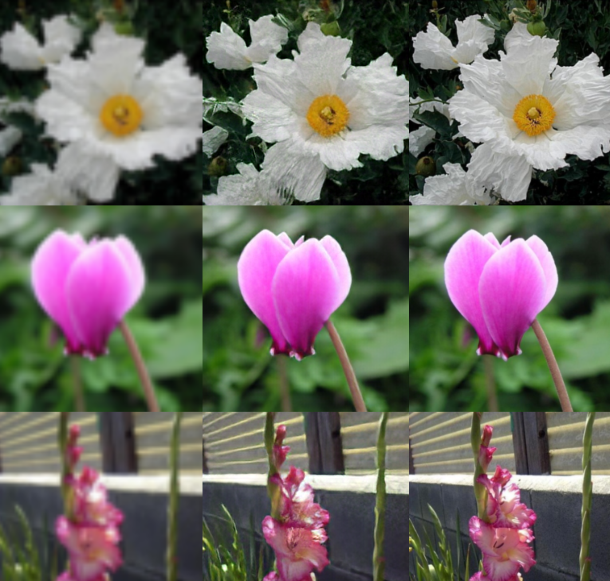{kind=link}
Das alte Setup
Im bisherigen Setup (vgl. frühere Aufgabe zum Perceptual Loss) haben wir ein einzelnes Netzwerk trainiert, um hochskalierte Bilder zu erzeugen. Dieses Netzwerk wurde mit dem Perceptual Loss optimiert, um die Qualität der Ergebnisse zu verbessern.
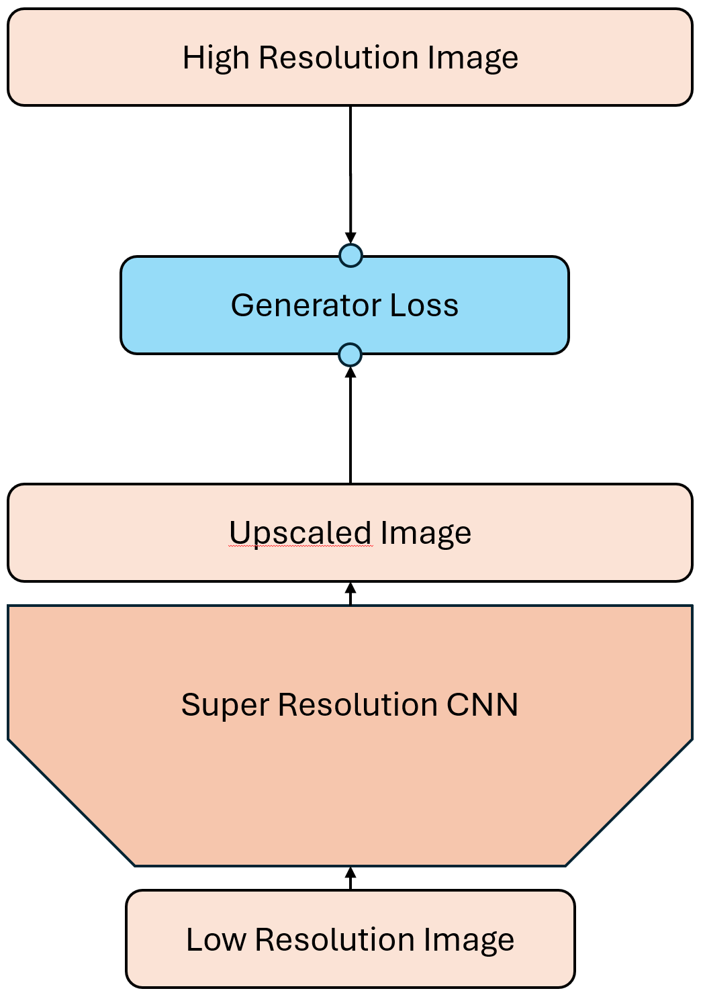{kind=link}
Das neue Setup
Der Adversarial Loss hingegen erfordert zwei Netzwerke: einen Generator und einen Kritiker. Die Aufgabe des Kritikers (Diskriminator) ist es, zwischen echten Bildern und den vom Generator erzeugten Bildern zu unterscheiden. Er tut dies jedoch nicht in Form eine binären Klassifikation, sondern bewertet die Realitätsnähe der Bilder auf einer Skala. Dies ermöglicht eine differenziertere Rückmeldung an den Generator. Der Kritiker vergibt in gewisserweise eine Punktzahl für die Qualität der Bilder, anstatt nur zu sagen, ob sie echt oder gefälscht sind. Dabei sollen möglichst realistische Bilder eine hohe Punktzahl erhalten und weniger realistische Bilder eine niedrige Punktzahl. Der Kritiker wird also darauf trainiert, echte Bilder von gefälschten zu unterscheiden und dabei eine Art „Qualitätsbewertung“ abzugeben.
Der Generator hingegen versucht, den Kritiker zu täuschen, indem er Bilder erzeugt, die so realistisch wie möglich wirken. Er verwendet die bisherigen Techniken wie den Perceptual Loss, um die Qualität der Bilder zu verbessern, aber zusätzlich wird er durch den Adversarial Loss motiviert, Bilder zu erzeugen, die der Kritiker als realistisch bewertet.
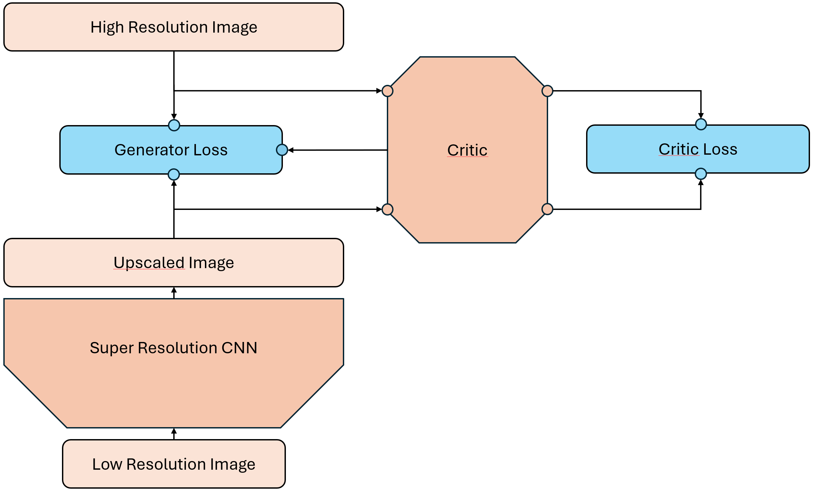{kind=link}
Das Zero-Sum Spiel
Das Training mit Adversarial Loss kann als ein Zero-Sum Spiel zwischen dem Generator und dem Kritiker betrachtet werden. Während der Generator versucht, die Punktzahl des Kritikers zu maximieren, indem er realistische Bilder erzeugt, versucht der Kritiker gleichzeitig, die Punktzahl des Generators zu minimieren, indem er gefälschte Bilder korrekt identifiziert. Dieses Spiel führt zu einem ständigen Wettlauf zwischen den beiden Netzwerken, wobei beide versuchen, sich gegenseitig zu überlisten und zu verbessern.
Alternierendes Training von Generator und Kritiker
Damit dieses Zero-Sum-Spiel überhaupt funktioniert, müssen Generator und Kritiker abwechselnd trainiert werden. Es ist nicht sinnvoll, beide Netzwerke gleichzeitig zu optimieren, da ihre Ziele direkt gegensätzlich sind. Stattdessen wird das Training in zwei Phasen aufgeteilt, die sich in jeder Iteration (oder jedem Batch) abwechseln:
Trainingsschritt für den Kritiker (Discriminator):
Zunächst wird der Kritiker optimiert.
Er erhält echte Bilder aus dem Datensatz sowie vom Generator erzeugte (gefälschte) Bilder.
Ziel ist es, die Unterscheidbarkeit zwischen echten und generierten Bildern zu maximieren.
Die Loss-Funktion wird minimiert, wenn der Kritiker echten Bildern hohe und gefälschten Bildern niedrige Scores zuweist.
Trainingsschritt für den Generator:
Danach wird der Generator aktualisiert, während der Kritiker eingefroren bleibt.
Der Generator erzeugt neue Bilder aus Low-Resolution-Eingaben.
Ziel ist es nun, Bilder zu erzeugen, die der Kritiker fälschlicherweise als „echt“ klassifiziert.
Die Loss-Funktion wird minimiert, wenn der Generator es schafft, den Kritiker zu täuschen.
Dieses abwechselnde Training zwingt beide Netzwerke dazu, sich stetig weiterzuentwickeln: Der Kritiker wird darin besser, subtile Unterschiede zwischen real und generiert zu erkennen – und der Generator lernt, genau diese feinen Merkmale realistischer darzustellen.
Ein entscheidender Aspekt dieses Trainingsverfahrens ist das Gleichgewicht: Wird der Kritiker zu stark, kann der Generator kaum lernen, da er ständig „verlieren“ würde. Ist der Generator zu stark, lernt der Kritiker nichts mehr. Daher ist es in der Praxis üblich, mehrere Kritiker-Updates pro Generator-Update durchzuführen oder den Lernfortschritt beider Netzwerke sorgfältig zu überwachen.
Im nächsten Abschnitt zeigen wir, wie sich dieser Prozess konkret umsetzen lässt – sowohl algorithmisch als auch mit PyTorch-Code.
Trainingsschleife für adversariales Upscaling
Um das alternierende Training zwischen Generator und Kritiker effizient umzusetzen, strukturieren wir unsere Trainingsschleife in zwei Hauptblöcke pro Iteration: zuerst trainieren wir den Kritiker, dann den Generator. Dies ermöglicht es, die dynamische Balance zwischen beiden Netzwerken aufrechtzuerhalten und stabil zu lernen.
Der Ablauf in vereinfachter Form sieht wie folgt aus:
Hole einen Batch von korrespondierenden echten High-Resolution-Bildern und Low-Resolution-Bildern aus dem Trainingsdatensatz.
Lasse den Generator hochskalierte Bilder erzeugen.
Trainiere den Kritiker mit echten und generierten Bildern. Dabei soll die Punktzahl für echte Bilder maximiert und für generierte Bilder minimiert werden.
Lipschitz-Bedingung: Wende Gewicht-Clipping oder Gradient Penalty an, um die Lipschitz-Bedingung zu gewährleisten.
Trainiere den Generator, während der Kritiker eingefroren bleibt. Dabei soll die Punktzahl für die vom Generator erzeugten Bilder maximiert werden.
Pseudocode (algorithmisch):
for epoch in range(num_epochs):
for real_lr_images, real_hr_images in dataloader:
# === Kritiker mehrfach updaten (n_critic Schritte) ===
for _ in range(n_critic):
freeze(generator)
unfreeze(critic)
fake_hr_images = generator(real_lr_images).detach()
# Kritiker-Output: hohe Werte für echte Bilder, niedrige für generierte
critic_real = critic(real_hr_images)
critic_fake = critic(fake_hr_images)
d_loss = -torch.mean(critic_real) + torch.mean(critic_fake)
d_loss.backward()
optimizer_critic.step()
# Gewicht-Clipping (Lipschitz-Bedingung. Alternative: Gradient Penalty)
for p in critic.parameters():
p.data.clamp_(-clip_value, clip_value)
# === Generator-Update ===
freeze(critic)
unfreeze(generator)
generated_hr = generator(real_lr_images)
critic_output = critic(generated_hr)
# Wasserstein-Loss (negativer Score, weil Generator maximieren will)
w_loss = -torch.mean(critic_output)
# Optional: zusätzlicher Perceptual und TV-Loss
perceptual = compute_vgg_loss(generated_hr, real_hr_images)
tv = total_variation_loss(generated_hr)
g_loss = λ_w * w_loss + λ_p * perceptual + λ_tv * tv
g_loss.backward()
optimizer_generator.step()
Der Generator
Wir verwenden die gleiche Architektur wie im vorherigen Abschnitt, um hochskalierte Bilder zu erzeugen. Der Generator nimmt Low-Resolution-Bilder als Eingabe und gibt hochskalierte Bilder zurück. Wir verwenden zunächst eine Kaskade von ResNet-Blöcken, gefolgt von einem Upsampling-Schritt mit PixelShuffle, um die Auflösung zu erhöhen. Dabei verwenden wir stets 7x7-Kernel, um die Details zu erhalten und die Bilder realistisch zu gestalten. Wir beginnen mit 16 Kanälen und verdoppeln die Anzahl der Kanäle in jedem Block, um die Komplexität zu erhöhen. Beim Upsampling verwenden wir PixelShuffle mit einem Skalierugsfaktor von 4, um die Auflösung zu erhöhen und die Anzahl der Kanäle zu reduzieren. Die verbleibenden 16 Kanäle in voller Auflösung werden dann durch eine weitere klassischen Faltung mit einer 7x7 Maske auf 3 Kanäle reduziert, um das finale hochskalierte Bild zu erzeugen. Die letzte Faltung verwendet keine Aktivierungsfunktion sondern wird wieder wie vorher zu dem klassisch hoch-skalierten Bild (Bilinear Upsampling) addiert.
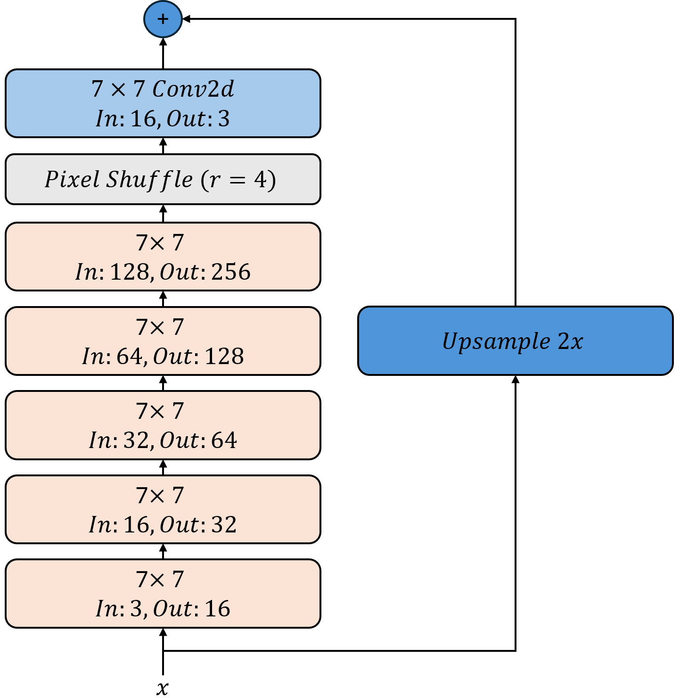{kind=link}
Der ResNet-Block ist bereits implementiert und kann verwendet werden.
- ResNetBlock.__init__(in_channels, out_channels, kernel_size=9, padding=None)[Quellcode]
Initialisiert einen ResNet-Block mit zwei Convolutional-Schichten, Batch-Normalisierung und ReLU-Aktivierung.
Parameters:
- in_channels (int):
Anzahl der Eingabekanäle.
- out_channels (int):
Anzahl der Ausgabekanäle.
- kernel_size (int, optional):
Größe des Convolutional-Kernels. Standard ist 9.
- padding (int, optional):
Padding für die Convolutional-Schichten. Standard ist None. In dem Fall wird das Padding automatisch berechnet, so dass die Ausgabe die gleiche Größe wie die Eingabe hat.
Aufgabe 1: Generator-Architektur implementieren
Implementieren Sie nun die Generator-Klasse, welche die ResNet-Blöcke verwendet und die oben beschriebene Architektur umsetzt.
- class adversarialloss.main.Generator[Quellcode]
Bases:
Module- __init__()[Quellcode]
Initialize the Upscale4x model.
This model performs 4x upscaling using a series of ResNet blocks and an upsampling layer.
TODO:
Call the __init__ method of the base class nn.Module.
Define an upsampling layer using nn.Upsample(scale_factor=4, mode=“bilinear“, align_corners=True).
Define a sequential model consisting of:
Five ResNetBlock layers with 3->16, 16->32, 32->64, 64->128 and 128->256 channels as well as kernel sizes 7.
A PixelShuffle layer with an upscale factor of 4.
A final convolutional layer with 16 input channels, 3 output channels and kernel size 5 with padding 2.
- forward(x)[Quellcode]
Perform the forward pass of the Upscale2x model.
Parameters:
- x (torch.Tensor):
The input tensor to be upscaled.
Returns:
- torch.Tensor:
The upscaled output tensor.
TODO:
Pass the input tensor through the model.
Also, apply the upsampling layer to the input tensor x.
Add the upsampled tensor to the output of the model.
Lösung anzeigen
class Generator(nn.Module):
def __init__(self):
super(Generator, self).__init__()
self.upBilinear = nn.Upsample(
scale_factor=4, mode="bilinear", align_corners=True
)
self.model = nn.Sequential(
ResNetBlock(3, 16, kernel_size=7),
ResNetBlock(16, 32, kernel_size=7),
ResNetBlock(32, 64, kernel_size=7),
ResNetBlock(64, 128, kernel_size=7),
ResNetBlock(128, 256, kernel_size=7),
nn.PixelShuffle(upscale_factor=4), # First upsample
nn.Conv2d(16, 3, kernel_size=7, padding=3), # Final conv to reduce channels
)
def forward(self, x):
x = self.upBilinear(x) + self.model(x)
return x
Der Kritiker
Der Kritiker (Diskriminator) ist ein neuronales Netzwerk, das darauf trainiert wird, zwischen echten und generierten Bildern zu unterscheiden. Er gibt eine Punktzahl für jedes Bild zurück, die angibt, wie realistisch es ist. Wir verwenden eine einfache Architektur, die aus mehreren Faltungsschichten besteht, gefolgt von einer linearen Schicht, die die Punktzahl für jedes Bild berechnet. Es ist wichtig, dass der Kritiker am Ende keine Aktivierungsfunktion verwendet, da er eine unbeschränkte Punktzahl zurückgeben soll. Das letzte Fully-Connected Layer verwendet darüber hinaus auch keinen lernbaren Bias-Term, da der Kritiker nur eine Punktzahl zurückgeben soll und keine Klassifikation vornehmen muss.
In diesem Beispiel verwenden wir eine Architektur mit 6 Faltungsschichten und unterschiedlicher Kernelgröße. Die Anzahl der Kanäle verdoppelt sich jeweils währen die Auflösung durch Verwendung von Strided Convolutions halbiert wird.
Als Nicht-linearität verwenden wir LeakyReLU mit einem negativen Slope von 0.01, um sicherzustellen, dass der Kritiker auch bei negativen Werten aktiv bleibt. Diese verhält sich ähnlich wie ReLU, lässt aber negative Werte mit einer anderen Steigung durch, was für den Kritiker wichtig ist, um auch negative Punktzahlen vergeben zu können.
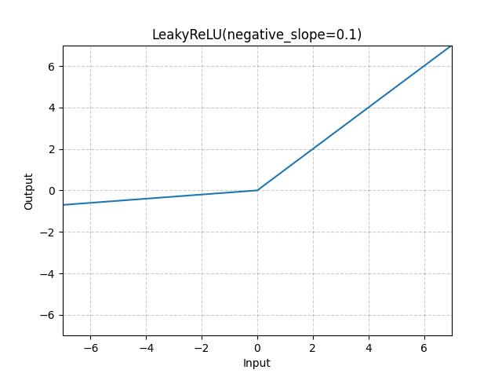 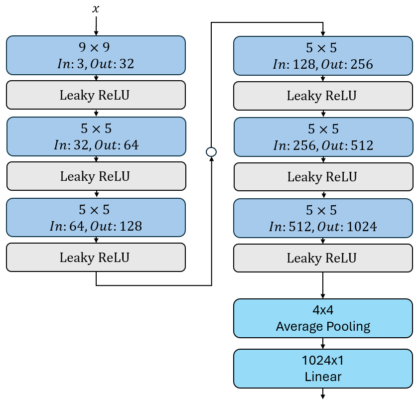{kind=link}
{kind=link}
Aufgabe 2: Kritiker-Architektur implementieren
Implementieren Sie nun die Kritiker-Klasse, welche die oben beschriebene Architektur umsetzt.
- class adversarialloss.main.Critic[Quellcode]
Bases:
Module- __init__()[Quellcode]
Initialize the Critic model.
This model is a convolutional neural network that takes an image as input and outputs a single score indicating the quality of the image.
TODO:
Call the __init__ method of the base class nn.Module.
- Define a sequential model consisting of:
A convolutional layer with 3 input channels, 32 output channels, kernel size 9, stride 2, and padding 4.
A LeakyReLU activation function with an inplace operation.
A convolutional layer with 32 input channels, 64 output channels, kernel size 5, stride 2, and padding 2.
A LeakyReLU activation function with an inplace operation.
A convolutional layer with 64 input channels, 128 output channels, kernel size 5, stride 2, and padding 2.
A LeakyReLU activation function with an inplace operation.
A convolutional layer with 128 input channels, 256 output channels, kernel size 5, stride 2, and padding 2.
A LeakyReLU activation function with an inplace operation.
A convolutional layer with 256 input channels, 512 output channels, kernel size 5, stride 2, and padding 2.
A LeakyReLU activation function with an inplace operation.
A convolutional layer with 512 input channels, 1024 output channels, kernel size 5, stride 2, and padding 2.
A LeakyReLU activation function with an inplace operation.
An average pooling layer with kernel size (4, 4) to reduce the spatial dimensions.
A flattening layer to convert the output to a 1D tensor.
A linear layer with 1024 input features and 1 output feature (no bias).
- forward(x)[Quellcode]
Perform the forward pass of the Critic model. Parameters: ———–
- x (torch.Tensor):
The input tensor to be processed by the Critic model.
Returns:
torch.Tensor: The output score from the Critic model.
TODO:
Pass the input tensor through the model.
Return the output score from the model.
Lösung anzeigen
class Critic(nn.Module):
def __init__(self):
super(Critic, self).__init__()
self.model = nn.Sequential(
nn.Conv2d(3, 32, kernel_size=9, stride=2, padding=4),
nn.LeakyReLU(inplace=True), # 32x128x128
nn.Conv2d(32, 64, kernel_size=5, stride=2, padding=2),
nn.LeakyReLU(inplace=True), # 64x64x64
nn.Conv2d(64, 128, kernel_size=5, stride=2, padding=2),
nn.LeakyReLU(inplace=True), # 128x32x32
nn.Conv2d(128, 256, kernel_size=5, stride=2, padding=2),
nn.LeakyReLU(inplace=True), # 256x16x16
nn.Conv2d(256, 512, kernel_size=5, stride=2, padding=2),
nn.LeakyReLU(inplace=True), # 512x8x8
nn.Conv2d(512, 1024, kernel_size=5, stride=2, padding=2),
nn.LeakyReLU(inplace=True), # 1024x4x4
nn.AvgPool2d(kernel_size=(4, 4)), # 1024x1x1
nn.Flatten(),
nn.Linear(1024, 1, bias=False), # Final output layer
)
def forward(self, x):
return self.model(x)
Der Generator Loss
Der Generator ist dafür verantwortlich, aus einem niedrig aufgelösten Bild eine realistisch wirkende hochaufgelöste Version zu erzeugen. Um dieses Ziel zu erreichen, kombinieren wir mehrere Teilverluste zu einer einzigen Loss-Funktion.
Die Erzeugung hochqualitativer Bilder ist ein komplexes Optimierungsproblem. Wenn wir uns nur auf den adversarialen Verlust stützen würden, könnte der Generator versuchen, „realistisch wirkende“ Texturen zu erzeugen – dabei aber den tatsächlichen Inhalt des Bildes ignorieren. Um dieses Problem zu vermeiden, kombinieren wir folgende Komponenten:
Perceptual Loss: Dieser Verlust basiert auf Feature-Maps eines vortrainierten Netzwerks (VGG16) und sorgt dafür, dass das generierte Bild semantisch mit dem Original übereinstimmt – auch wenn es pixelweise Unterschiede gibt.
Total Variation (TV) Loss: Dieser Term bestraft unnötige Rauscheffekte und sorgt für glatte Übergänge in homogenen Bildregionen.
Adversarialer Verlust (Wasserstein-Loss): Der Generator versucht, Bilder zu erzeugen, denen der Kritiker (Discriminator) möglichst hohe Realismus-Scores zuweist. Der WGAN-Ansatz erlaubt es, diesen Score direkt zu verwenden (kein Cross-Entropy).
Zeitliche Gewichtung des Adversarial Loss: Um das Training stabil zu halten, wird der Einfluss des adversarialen Teils langsam erhöht. In den ersten Epochen dominiert der Inhalt – erst später wird auf visuelle Details und Texturen fokussiert.
Der vollständige Verlust des Generators ergibt sich also wie folgt:
Dabei ist:
\(D(x)\) der Score des Kritikers für ein generiertes Bild
\(\lambda_{\text{adv}}\) eine skalierende Gewichtung, die mit jeder Epoche wächst
\(\lambda_{\text{TV}}\) ein fester Hyperparameter (z. B. 0.1)
Diese Loss-Funktion kombiniert das Beste aus beiden Welten: Sie erzwingt eine semantisch korrekte Rekonstruktion durch Perceptual Loss, ein visuell stabiles Bild durch TV-Loss – und realistische Texturen durch den adversarialen Druck des Wasserstein-Kritikers. Gleichzeitig wird durch die stufenweise Einblendung des Adversarial Loss verhindert, dass das Training instabil wird oder der Generator frühzeitig „halluziniert“.
Aufgabe 3: Generator Loss implementieren
Implementieren Sie nun die GeneratorLoss-Klasse, welche die oben beschriebene Architektur umsetzt.
- class adversarialloss.main.GeneratorLoss(critic)[Quellcode]
Bases:
Module- __init__(critic)[Quellcode]
Initialize the GeneratorLoss module.
Parameters:
- critic (nn.Module):
The critic model used for adversarial loss computation.
TODO:
Call the __init__ method of the base class nn.Module.
Initialize the VGG16PerceptualLoss for perceptual loss computation.
Initialize the TVLoss for total variation loss computation.
Store the critic model for adversarial loss computation.
- forward(output, target, epoch)[Quellcode]
Compute the generator loss.
The generator loss is a combination of perceptual loss, total variation loss, and adversarial loss.
The sum of the perceptual loss and total variation loss is called content loss as it is used to measure the quality of the generated image in terms of content similarity to the target image.
The adversarial loss is computed using the critic model, which is trained to distinguish between real and generated images. The generator aims to maximize the critic’s output for generated images, thus it tries to fool the critic. Mathematically, this is achieved by negating the critic’s output.
Since the critic is not yet fully trained during the initial epochs, we apply a linear scaling factor to the adversarial loss based on the current epoch. This allows the generator to focus more on content loss in the early stages of training and gradually increase the importance of adversarial loss as training progresses. In the first epoch, the adversarial loss is not applied at all, and it starts to increase linearly until it reaches its full weight at epoch 5 epoch.
The generator shall minimize the content loss while maximizing the adversarial loss, which is achieved by negating the critic’s output.
Parameters:
- output (torch.Tensor):
The output tensor from the generator.
- target (torch.Tensor):
The target tensor for comparison.
- epoch (int):
The current training epoch.
Returns:
Dictionary with the following keys:
„generator_loss“: The total generator loss, which includes perceptual loss, TV loss, and adversarial loss.
„content_loss“: The content loss (perceptual loss).
„adversarial_loss“: The adversarial loss computed from the critic.
TODO:
Compute the adversarial loss by running the generator images through the critic and taking the mean. Then scale it by 0.01.
Compute the linear scaling factor for the adversarial loss based on the current epoch. The scaling factor should be 0 in the first epoch and increase linearly to 1 by epoch 5.
Compute the content loss as the sum of perceptual loss and TV loss. Scale the TV loss by 0.1 to reduce its impact on the total loss.
Compute the total generator loss as the sum of content loss and the negative adversarial loss scaled by the linear scaling factor.
Return a dictionary containing the total generator loss, content loss, and adversarial loss.
Lösung anzeigen
class Critic(nn.Module):
def __init__(self):
super(Critic, self).__init__()
super(GeneratorLoss, self).__init__()
self.perceptualLoss = VGG16PerceptualLoss()
self.mseLoss = nn.MSELoss()
self.tvLoss = TVLoss()
self.critic = critic
def forward(self, x):
adversarial_loss = 0.01 * self.critic(output).mean()
adversarial_lambda = min(1.0, epoch / 5.0)
content_loss = (
self.perceptualLoss(output, target)
+ 0.1 * self.tvLoss(output)
)
return (
content_loss - adversarial_lambda * adversarial_loss,
content_loss,
adversarial_loss,
)
Loss-Funktion des Kritikers mit Gradient Penalty (WGAN-GP)
Im Wasserstein-GAN mit Gradient Penalty (WGAN-GP) wird der Kritiker so trainiert, dass er echte Bilder möglichst hoch und generierte Bilder möglichst niedrig bewertet. Zusätzlich wird er dazu gezwungen, eine mathematische Bedingung zu erfüllen – die sogenannte 1-Lipschitz-Stetigkeit. Um das zu erreichen, erweitern wir den Verlust des Kritikers um einen sogenannten Gradient Penalty.
Motivation: Warum braucht der Kritiker eine Regularisierung?
Die theoretische Grundlage des Wasserstein-GANs basiert auf der Wasserstein-1-Distanz – auch bekannt als Earth Mover’s Distance. Diese Distanz misst, wie viel Aufwand es kosten würde, die Wahrscheinlichkeitsverteilung der generierten Bilder in die Verteilung der echten Bilder zu „transportieren“. Damit diese Metrik überhaupt sinnvoll funktioniert, muss der Kritiker (also die Funktion \(D(x)\)) eine spezielle Eigenschaft erfüllen:
Er muss 1-Lipschitz-stetig sein, d. h. seine Ausgaben dürfen sich maximal proportional zur Eingangsänderung verändern:
Mit anderen Worten: Der Kritiker darf keine sprunghaften Ausgaben machen – er muss gleichmäßig „bewerten“. Ohne diese Bedingung würde die Wasserstein-Distanz nicht mehr garantiert konvergieren und das Training könnte instabil werden.
Was ist der Gradient Penalty?
Wir verwenden einen eleganteren Weg um das Lipschitz-Kriterium zu erfüllen: Es wird sichergestellt, dass die Gradienten der Kritiker-Ausgabe bezogen auf die Eingaben möglichst nahe an Norm 1 bleiben.
Dazu berechnen wir den Gradienten der Kritikerfunktion \(D(\hat{x})\) bezüglich einer Zwischenprobe \(\hat{x}\), die linear zwischen echten und generierten Bildern liegt:
Der Gradient Penalty ist dann definiert als:
Diese Regularisierung bestraft Abweichungen von der idealen Norm 1. Sie wird zum Kritiker-Loss addiert und wirkt stabilisierend.
Gesamter Kritiker-Loss in WGAN-GP
Dein Kritiker-Loss besteht also aus zwei Teilen:
Wasserstein-Loss (ohne BCE!):
\[\mathcal{L}_{\text{WGAN}} = - \mathbb{E}[D(x_{\text{real}})] + \mathbb{E}[D(x_{\text{fake}})]\]Gradient Penalty:
\[\mathcal{L}_{\text{GP}} = \lambda \cdot \left( \| \nabla_{\hat{x}} D(\hat{x}) \|_2 - 1 \right)^2\]
Der kombinierte Kritiker-Loss lautet:
Aufgabe 4: Kritiker Loss implementieren
Implementieren Sie nun die CriticLoss-Klasse, welche den oben beschriebenen Loss umsetzt.
- class adversarialloss.main.CriticLoss(critic)[Quellcode]
Bases:
Module- __init__(critic)[Quellcode]
Initialize the CriticLoss module. This module computes the loss for the critic model, including the gradient penalty to enforce the Lipschitz constraint.
- compute_gradient_penalty(real, fake, lambda_gp=30)[Quellcode]
Compute the gradient penalty for the critic. This function calculates the gradient penalty to enforce the Lipschitz constraint on the critic model.
- forward(real, fake)[Quellcode]
Compute the critic loss, including the gradient penalty. Parameters: ———–
- real (torch.Tensor):
The real images from the dataset.
- fake (torch.Tensor):
The generated images from the generator model.
Returns:
Dictionary with the following keys:
„loss_c“: The total critic loss, which includes the WGAN loss and the gradient penalty (torch.Tensor).
„gradient_norm“: The gradient norm for logging purposes (torch.Tensor).
„pure_wgan_loss“: The pure WGAN loss (without gradient penalty) for logging purposes (torch.Tensor).
- TODO:
Calculate the WGAN loss as the difference between the mean critic score for real images and the mean critic score for fake images.
Compute the gradient penalty using the compute_gradient_penalty method. Note: This method returns both the gradient penalty and the gradient norm.
Return the total critic loss, gradient norm, and pure WGAN loss.
Lösung anzeigen
class CriticLoss(nn.Module):
def forward(self, real, fake):
gp, gradient_norm = self.compute_gradient_penalty(real, fake)
loss_c = -self.critic(real).mean() + self.critic(fake).mean()
return loss_c + gp, gradient_norm, loss_c
Der Trainingsprozess
Der Trainingsprozess für das adversariale Upscaling folgt dem bereits beschriebenen alternierenden Ansatz. Er ist etwas komplexer als bei den vorherigen Aufgaben, da wir nun zwei Netzwerke (Generator und Kritiker) trainieren müssen.
Die Klasse UpscaleTrainer kapselt den gesamten Trainingsprozess für ein adversariales Super-Resolution-Modell auf Basis eines Wasserstein-GANs mit Gradient Penalty (WGAN-GP).
Sie übernimmt die getrennte Steuerung und Optimierung des Generators und des Kritikers, inklusive Verlustberechnung, Gradientenbehandlung und
Optimierungsschritten.
Nochmal zur Erinnerung: Ziel ist es, zwei Netzwerke miteinander im Wettbewerb zu trainieren:
Der Generator erzeugt hochaufgelöste Bilder aus niedrigaufgelösten Eingaben.
Der Kritiker bewertet die Bildrealismus dieser Ausgaben im Vergleich zu echten hochaufgelösten Bildern.
Struktur und Komponenten
Die Klasse besteht aus drei zentralen Elementen:
Initialisierung (`__init__`)
Initialisiert die beiden Modelle:
GeneratorundCritic.Verknüpft die passenden Loss-Klassen:
GeneratorLossundCriticLoss.Definiert zwei separate Optimierer mit unterschiedlichen Lernraten für Generator und Kritiker.
Gibt die Parameteranzahl beider Modelle aus, um das Modellverständnis zu fördern.
Trainingsmethoden
train_critic(input, target)Führt einen Trainingsschritt für den Kritiker durch.
Verwendet die CriticLoss, die den Wasserstein-Loss sowie den Gradient Penalty beinhaltet.
Berechnet die Gradienten, führt Backpropagation durch und optimiert den Kritiker.
Nutzt Gradient Clipping zur Stabilisierung der Trainingsdynamik.
Gibt diagnostische Werte wie den Gradientennorm und den Verlust zurück.
train_generator(input, target, epoch)Führt einen Trainingsschritt für den Generator durch.
Verwendet die GeneratorLoss, die aus Perceptual Loss, TV-Loss und adversarial Loss besteht.
Der Anteil des adversarialen Verlusts wird dabei dynamisch über die Epoche skaliert.
Gradienten werden berechnet, geclippt und zur Optimierung verwendet.
Gibt alle relevanten Metriken sowie das generierte Bild zurück.
Trainingszyklus (`train_batch`)
Trainiert bei jedem Aufruf den Kritiker.
Der Generator wird nur in jeder fünften Iteration oder während der ersten Epoche trainiert.
Dieses Verhältnis (5:1) entspricht der Empfehlung in WGAN-GP, um dem Kritiker einen Lernvorsprung zu geben.
Gibt die Ergebnisse beider Trainingsschritte sowie das aktuelle Ausgabebild des Generators zurück.
Aufgabe 5: UpscaleTrainer implementieren
Implementieren Sie nun die UpscaleTrainer-Klasse, welche den oben beschriebenen Trainingsprozess umsetzt.
- class adversarialloss.main.UpscaleTrainer[Quellcode]
Bases:
object- __init__()[Quellcode]
- train_batch(input, target, epoch)[Quellcode]
Train a batch of images using the critic and generator models.
Parameters:
- input (torch.Tensor):
The input tensor containing the images to be processed by the generator.
- target (torch.Tensor):
The target tensor containing the ground truth images for comparison.
- epoch (int):
The current training epoch, used to scale the adversarial loss.
Returns:
A dictionary containing the scores from the critic and generator models with the following keys: - „critic“: A dictionary containing the critic scores with keys „gradient_norm“ and „loss_c“. - „generator“: A dictionary containing the generator scores with keys „loss“, „content_loss“, „adversarial_loss“, „gradient_norm“, and „output“.
TODO:
Train the critic model using the train_critic method with the input and target tensors.
Increment the critic updates counter (self.criticUpdates).
If the critic updates counter is 5 or the epoch is less than 1, train the generator model using the train_generator method with the input and target tensors, and the current epoch. Also reset the critic updates counter to 0.
If the critic updates counter is not 5 and the epoch is greater than or equal to 1, skip training the generator and set the generator scores to None.
Return the critic scores and generator scores (if available)
- train_critic(input, target)[Quellcode]
Train the critic model on a batch of input and target images.
Parameters:
- input (torch.Tensor):
The input tensor containing the images to be processed by the generator.
- target (torch.Tensor):
The target tensor containing the ground truth images for comparison.
Returns:
dict: A dictionary containing the gradient norm and the critic loss with the following keys:.
„gradient_norm“: The gradient norm computed during the training of the critic (float). „loss_c“: The critic loss computed during the training (float).
TODO:
Pass the input tensor through the generator to obtain the generator output.
Zero the gradients of the critic optimizer (self.optimCritic).
Compute the critic loss using the CriticLoss module, which includes the WGAN loss and the gradient penalty. Store the gradient norm and the critic loss for later so you can return it.
Backpropagate the critic loss to compute the gradients.
Clip the gradients of the generator to prevent exploding gradients (use `torch.nn.utils.clip_grad_norm_ https://docs.pytorch.org/docs/stable/generated/torch.nn.utils.clip_grad_norm_.html>`_ with max_norm=5.0).
Step the critic optimizer to update the critic’s parameters.
Return a dictionary containing the gradient norm and the critic loss.
- train_generator(input, target, epoch)[Quellcode]
Train the generator model on a batch of input and target images.
Parameters:
- input (torch.Tensor):
The input tensor containing the images to be processed by the generator.
- target (torch.Tensor):
The target tensor containing the ground truth images for comparison.
epoch (int): The current training epoch, used to scale the adversarial loss.
Returns:
- dict: A dictionary containing the total generator loss, content loss, adversarial loss, and gradient norm with the following keys:
„loss“: The total generator loss (float). „content_loss“: The content loss (float). „adversarial_loss“: The adversarial loss (float). „gradient_norm“: The gradient norm (float). „output“: The output tensor from the generator (torch.Tensor).
TODO:
Zero the gradients of the generator optimizer (self.optimGenerator).
Pass the input tensor through the generator to obtain the generated upsample image.
Compute the generator loss using the GeneratorLoss module, which includes perceptual loss, TV loss, and adversarial loss. Store the content loss, adversarial loss, and total generator loss for later so you can return it.
Backpropagate the total generator loss to compute the gradients.
Clip the gradients of the generator to prevent exploding gradients (use `torch.nn.utils.clip_grad_norm_ https://docs.pytorch.org/docs/stable/generated/torch.nn.utils.clip_grad_norm_.html>`_ with max_norm=1.0).
Call torch.nn.utils.clip_grad_norm_ again with max_norm=1e9 and store the gradient norm for later so you can return it.
Step the generator optimizer to update the generator’s parameters.
Return a dictionary containing the total generator loss, content loss, adversarial loss, the output and the gradient norm.
Lösung anzeigen (train_critic)
def train_critic(self, input, target):
output = self.generator(input)
self.optimCritic.zero_grad()
critic_loss, gradient_norm, loss_c = self.criticLoss(
self.critic, target, output
)
critic_loss.backward()
torch.nn.utils.clip_grad_norm_(self.generator.parameters(), max_norm=5.0)
self.optimCritic.step()
return {
"gradient_norm": gradient_norm.mean().item(),
"loss_c": loss_c.item(),
}
Lösung anzeigen (train_generator)
def train_generator(self, input, target, epoch):
self.optimGenerator.zero_grad()
output = self.generator(input)
loss, content_loss, adversarial_loss = self.generatorLoss(output, target, epoch)
loss.backward()
torch.nn.utils.clip_grad_norm_(self.generator.parameters(), max_norm=1.0)
gen_norm = torch.nn.utils.clip_grad_norm_(
self.generator.parameters(), max_norm=1e9
)
self.optimGenerator.step()
return {
"loss": loss.item(),
"content_loss": content_loss.item(),
"adversarial_loss": adversarial_loss.mean().item(),
"gradient_norm": gen_norm.item(),
"output": output.detach().cpu() if output is not None else None,
}
Lösung anzeigen (train_batch)
def train_batch(self, input, target, epoch):
# Train Critic every step
scoresCritic = self.train_critic(input, target)
self.criticUpdates += 1
# Train Generator only every 4th step
if self.criticUpdates == 5 or epoch < 1:
scoresGenerator = self.train_generator(input, target, epoch)
self.criticUpdates = 0
else:
scoresGenerator = None
return scoresCritic, scoresGenerator
Das Training
Um das Training zu starten, brauchen Sie nur die main.py Datei auszuführen.
python main.py
Starten Sie parallel das TensorBoard, um den Fortschritt zu verfolgen:
tensorboard --logdir=logs
Öffnen Sie dann Ihren Browser und gehen Sie zu http://localhost:6006, um die TensorBoard-Oberfläche zu sehen.
Das Training kann je nach Hardware und Datensatz einige Stunden dauern, aber Sie sollten bereits nach kurzer Zeit eine Verbesserung der Bildqualität feststellen können. Nach etwa 15 Epochen sollten Sie bereits erste Fortschritte sehen. Die Bilder sollten zunehmend realistischer werden und weniger Artefakte aufweisen.
Die TensorBoard-Diagramme zeigen den Verlauf der verschiedenen Loss-Werte und Metriken während des Trainings.
Die wichtigsten Metriken sind:
Der Content-Loss Perceptual Loss und TV-Loss ohne Adversarial Loss
{kind=link}
Der Adversarial Loss Der Wasserstein-Loss des Generators, der den Kritiker täuschen soll
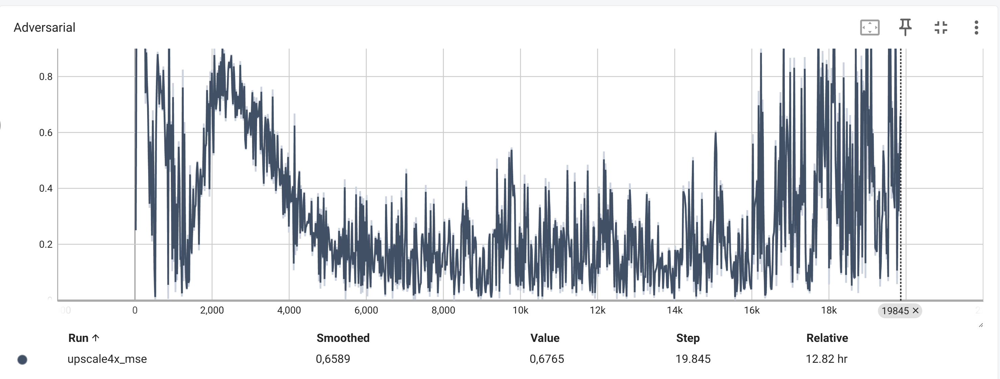{kind=link}
Der Verlust des Generators (Generator Loss) Summe aus Perceptual Loss, TV-Loss und Adversarial Loss
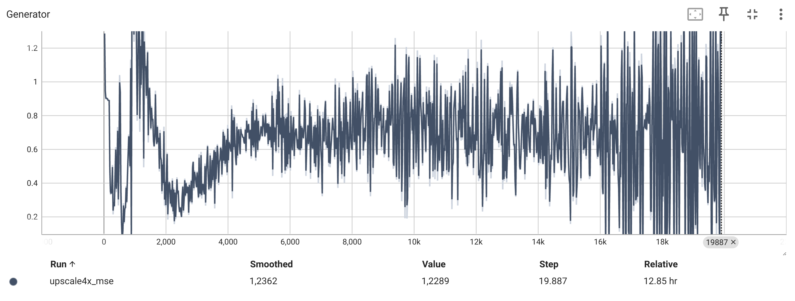{kind=link}
Der Verlust des Diskriminators (Discriminator Loss)
{kind=link}
Die Bildqualität (z.B. LPIPS, PSNR, MSE)
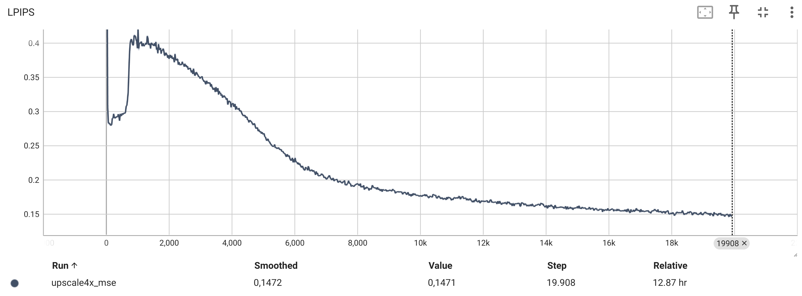 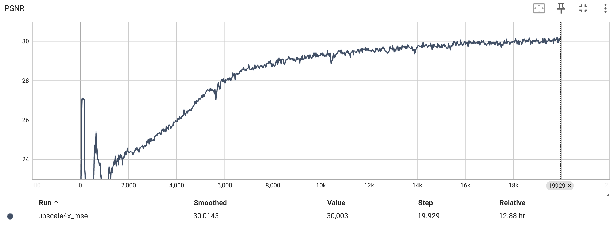 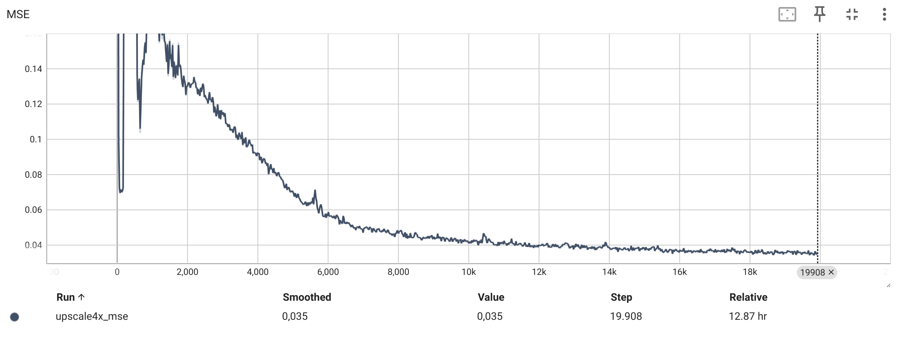{kind=link}
{kind=link}
{kind=link}
Die Norm des Generator-Gradienten
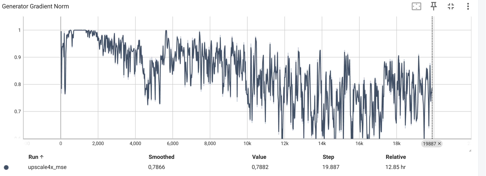{kind=link}
Die Norm des Kritiker-Gradienten
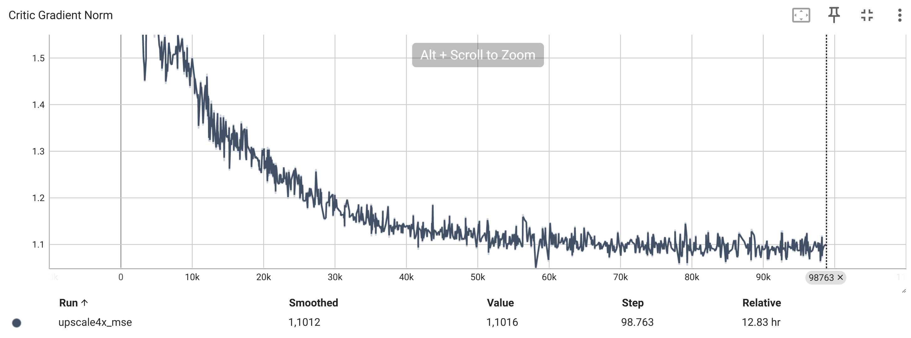{kind=link}
Die generierten Bilder
Links sehen Sie das niedrig aufgelöste Eingangsbild, in der Mitte das hochskalierte Ergebnis des Generators und rechts das Originalbild zum Vergleich.
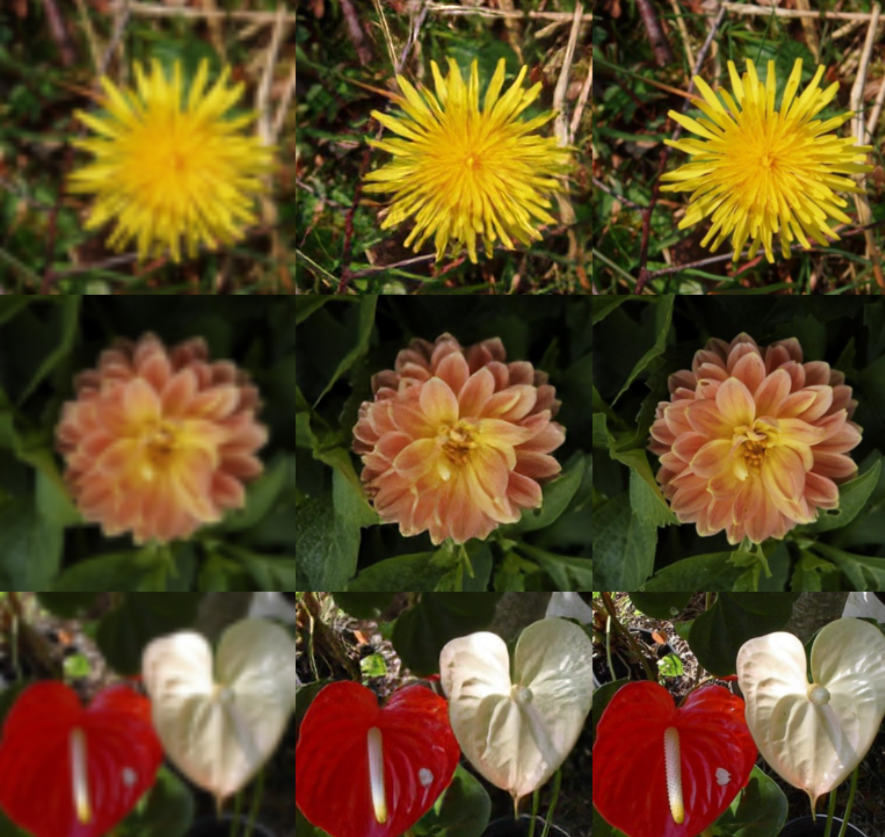 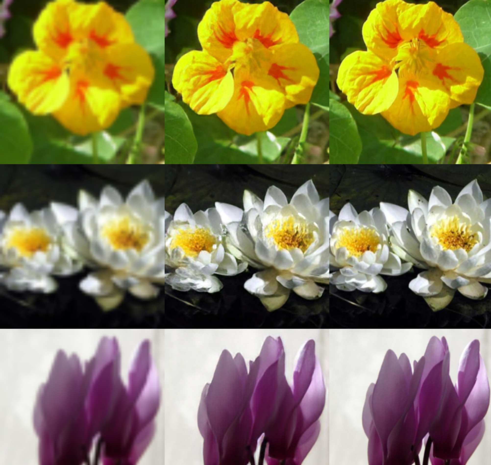 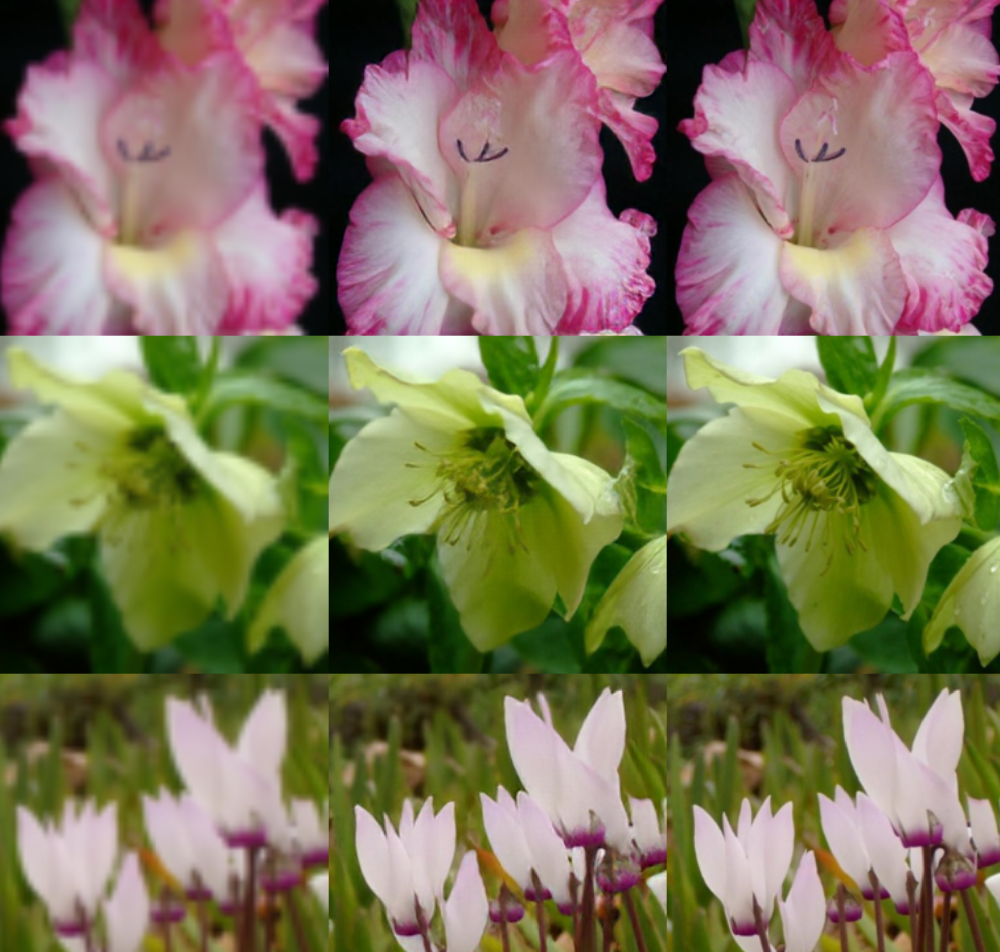{kind=link}
{kind=link}
{kind=link}
{kind=link}